The eyetools package is designed to provide a consistent set of functions that helps researchers perform straightforward, yet powerful, steps in the analysis of eye-data. The suite of functions will allow the user to go from relatively unprocessed data to trial level summaries that are ready for statistical analysis.
You can install eyetools using the following code:
install.packages('eyetools')A quick note before starting: the following tutorial is written using only the dependencies contained within eyetools, so that means that if you are planning on following this tutorial through, you only need to install eyetools.
## Successfully loaded eyetools version 0.10.0
## If you use this package, we would love to hear from you: t.beesley@lancaster.ac.uk
## See NEWS for details of all changes.Specifying eye-tracker properties
To ensure accurate computation within eyetools, it is important for
users to specify the properties of the data and the recording device.
This can be done using the function
tracker_properties_set(). Calling this without arguments
will provide a list of the parameters that can be specified:
## Available parameters you can change:## [1] "sample_frequency" "viewing_distance_cm" "screen_width_cm"
## [4] "screen_height_cm" "screen_width_pixels" "screen_height_pixels"For example, we can set the sampling frequency:
tracker_properties_set(sample_frequency = 300)This overides the default value, which is purposefully left NULL. If a function detects a NULL sampling frequency it will estimate the sampling frequency from the timestamps in the data. The current tracker properties can be revealed using:
## $sample_frequency
## [1] 300
##
## $viewing_distance_cm
## [1] 60
##
## $screen_width_cm
## [1] 53
##
## $screen_height_cm
## [1] 30
##
## $screen_width_pixels
## [1] 1920
##
## $screen_height_pixels
## [1] 1080Data Manipulation and Preprocessing
Eyetools has built in example data that can be used while getting to grips with the package. For the purpose of this tutorial, we will start with a small dataset that contains binocular eye data from two participants (and six trials) from a simple contingency learning task (the data are from Beesley, Nguyen, Pearson, & Le Pelley, 2015)1. In this task there are two stimuli that appear simultaneously on each trial (to the left and right in the top half of the screen). Participants look at these cues and then make a decision by selecting an “outcome response” button.
Let’s load in this binocular data and explore the format. As we can see, the dataset is formed of 31,041 rows and 7 variables
## [1] 31041 7To get a basic idea of the contents of the data, we can look at the first 10 observations in the data
We can see that our seven variables contain the participant
identifier (pID), the timepoint of the trial
(time), the left eye x and y coordinates
(left_x and left_y), the right eye coordinates
(right_x and right_y), as well as a trial
identifier (trial).
By default eyetools assumes that the resolution of eye data is in pixels (and a default screen size of 1920x1080), however the functions should work with any units (with no guarantee as it is not tested with units other than pixels).
head(HCL, 10)## pID time left_x left_y right_x right_y trial
## 1 118 0 908.6354 825.5366 1003.0812 807.5926 1
## 2 118 3 912.1100 828.8806 1000.9256 812.3637 1
## 3 118 7 911.5480 826.4333 1009.9286 813.0900 1
## 4 118 10 907.8889 823.8142 1006.0566 806.8520 1
## 5 118 13 911.9879 823.5715 1005.2550 804.5915 1
## 6 118 17 912.2458 826.3770 999.7613 801.9357 1
## 7 118 20 909.8344 825.6048 996.6499 805.5704 1
## 8 118 23 912.3329 824.7951 1004.6580 806.1265 1
## 9 118 27 911.0252 819.2719 1006.4573 807.7407 1
## 10 118 30 913.6681 821.2920 1012.9939 803.9613 1eyetools functions can accept either single-participant data or
multi-participant data. By default, most functions assume that data is
of a single participant unless a participant identifier
column called participant_col is present,in which case the
data is handled as multi-participant. In cases where participants are
identified with a different variable, functions accept a parameter of
participant_col that takes a character string of the
identifying column. In situations where participant_col is not declared,
and when duplicated non-consecutive trials are detected (that implies
multi-participant data being input as single-participant), the function
will error. This is a good point to then check your data structure,
ensure that it is labelled correctly and ordered by trial and time.
Converting binocular data to monocular data
We need to combine the left and right eye x and y coordinates to get
a single pair of [x,y] coordinates for each timepoint. The eyetools
function combine_eyes() can do this for us. The
method parameter gives the option to either “average” the
two eyes, or we can use the “best_eye”. For “average”, the result is
based on the average of the two eyes for each sample, or for samples
where there is data from only a single eye, that eye is used. For
“best_eye”, a summary of the proportion of missing samples is computed,
and the eye with the fewest missing samples is used. Here we use the
default parameter “average”.
combine_eyes() is one of the few core eyetools functions
that doesn’t handle multi-participant/single-participant data
differently. Primarily because of the function’s construction and its
intended useage, it does not need to do so.
data <- combine_eyes(HCL)The above code returns a flattened list of all participants data, and if we take a look at just one participant, we are returned with a dataframe that has x and y variables in place of the left_* and right_* variables. This is the data format needed by many of the other eyetools functions: time, x, y, and trial. The ordering of the variables should not matter, however most of the functions will impose an ordering in how the information is returned.
head(data) # participant 118## pID time trial x y
## 1 118 0 1 955.8583 816.5646
## 2 118 3 1 956.5178 820.6221
## 3 118 7 1 960.7383 819.7616
## 4 118 10 1 956.9727 815.3331
## 5 118 13 1 958.6214 814.0815
## 6 118 17 1 956.0035 814.1564Fixing missing data and repairing data
The next stage of the process would be to remove missing data within
continuous streams of eye data which are likely to be caused by
blinking. We can do this using the interpolate() function.
The maxgap parameter specifies the maximum time frame of consecutive NAs
to fill. Any longer gaps will be left unchanged. This is set as default
to 150, the typical duration of a blink. The method parameter can either
be “approx” (default) or “spline” which are both calls to
zoo::na.approx and zoo::na.spline
respectively.
Note that as the participant identifier column is not “participant_col” (as eyetools expects as default), it needs to be specified in the function call.
data <- interpolate(data, maxgap = 150, method = "approx")You can also request a report of the differences in NA values present before and after the interpolation as well
interpolate_report <- interpolate(data, maxgap = 150, method = "approx", report = TRUE)
interpolate_report[[2]]## pID missing_perc_before missing_perc_after
## 1 118 0.018152889 0.018152889
## 2 119 0.009875683 0.009875683An additional step that can be beneficial is to pass the eye data
through the smoother() function. This removes particularly
jerky transitions between samples and is critical for the analysis of
velocities in the eye-movements. For now, let’s store the smoothed data
in a new object. We can also ask for a plot of the data so that we can
visually inspect it to see how well it fits the data.
set.seed(0410) #set seed to show same participant and trials in both chunks
data_smooth <- smoother(data,
span = .1, # default setting. This controls the degree of smoothing
plot = TRUE) # whether to plot or not, FALSE as default## Showing trials: 4, 6 for participant 119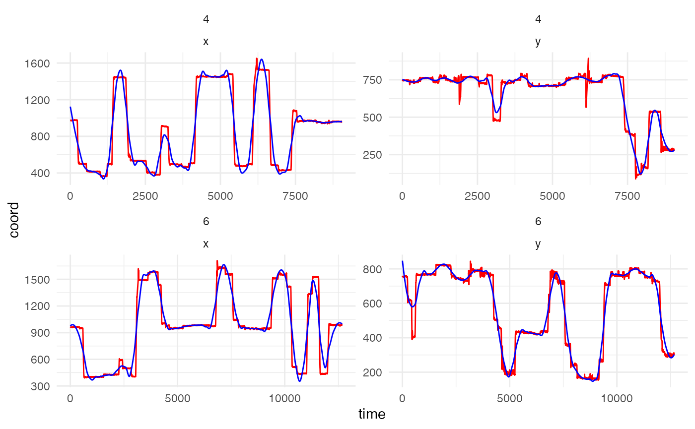
The plot above shows the difference between the raw and smoothed data for a randomly selected participant and two random trials (simply for visualisation purposes and to keep the amount of plotting to a minimum).
With the default smoothing setting, we can see that the smoothed data
does not track the actual data as closely as it could. The lower the
value of span, the closer the smoothed data represents the
raw data. A visual inspection of the plot suggests that a span of .02 is
a good value for this data example. It is important that the fixations
and saccades are matched closely to ensure data quality. Oversmooth and
you end up with significant data loss, undersmooth and all the jerky eye
movement is preserved rendering the use of smoother()
meaningless, so a good inspection and testing of values can be
useful.
set.seed(0410) #set seed to show same participant and trials in both chunks
data_smooth <- smoother(data,
span = .02,
plot = TRUE)## Showing trials: 4, 6 for participant 119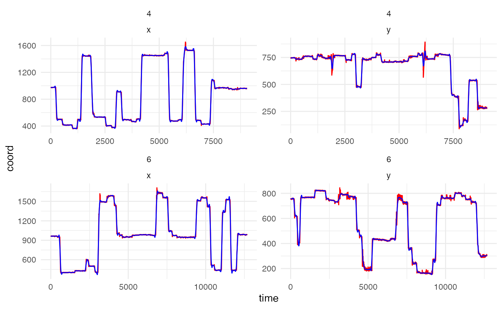
Counterbalancing positions
Many psychology experiments will position stimuli on the screen in a counterbalanced fashion. For example, in the example data we are using, there are two stimuli, with one of these appearing on the left and one on the right. In our design, one of the cue stimuli is a “target” and one is a “distractor”, and the experiment counterbalances whether these are positioned on the left or right across trials.
Eyetools has a built in function which allows us to transform the x
(or y) values of the stimuli to take into account a counterbalancing
variable: conditional_transform(). This function currently
allows for a single-dimensional flip across either the horizontal or
vertical midline. It can be used on raw data or fixation data. It
requires the spatial coordinates (x, y) and a specification of the
counterbalancing variable. The result is a normalised set of data, in
which the x (and/or y) position is consistent across counterbalanced
conditions (e.g., in our example, we can transform the data so that the
target cue is always on the left). This transformation is especially
useful for future visualisations and calculation of time on areas of
interest. Note that conditional_transform() is another
function that does not discriminate between multi-participant and
single-participant data and so no participant_col parameter is
required.
The keen-eyed will notice that the present data does not contain a
variable to specify the counterbalanced positions. This is contained in
a separate dataset that holds the behavioural data, including the
response times, the outcome, accuracy, and cue_order which
tells us whether the target cue was on the left (coded as 1) or on the
right (coded as 2).
data_behavioural <- HCL_behavioural # behavioural data
head(data_behavioural)## pID trial P_cue NP_cue cue_order correct_out accuracy RT
## 1 118 1 2 5 2 2 0 13465.0
## 2 118 2 2 6 2 2 0 7795.7
## 3 118 3 1 6 2 1 1 5266.8
## 4 118 4 1 5 2 1 1 9911.1
## 5 118 5 2 5 2 2 1 4424.2
## 6 118 6 2 6 2 2 1 5224.2First we need to combine the two datasets based upon the participant
identifier. Once the data has been joined we can use
conditional_transform() to transform the x coordinates
across the midline.
data <- merge(data_smooth, data_behavioural) # merges with the common variables pNum and trial
data <- conditional_transform(data,
flip = "x", #flip across x midline
cond_column = "cue_order", #this column holds the counterbalance information
cond_values = "2",#which values in cond_column to flip
message = FALSE) #suppress message that would repeat "Flipping across x midline" Fixation Detection
In this next stage, we can start to explore the functions available
for determining fixations within the data. The two main functions here
are fixation_dispersion() and fixation_VTI().
Alongside these, is the option to compare_algorithms()
which produces a small number of metrics and plots to help visualise the
two fixation algorithms. We will first demonstrate and explain the two
algorithms before demonstrating compare_algorithms() as
this relies on the two fixation algorithms.
Dispersion Algorithm
fixation_dispersion() detects fixations by assessing the
dispersion of the eye position using a method similar to that
proposed by Salvucci and Goldberg (1996)2. This evaluates the
maximum dispersion (distance) between x/y coordinates across a window of
data, and looks for sufficient periods in which this maximum dispersion
is below the specified dispersion tolerance. NAs are considered breaks
in the data and are not permitted within a valid fixation period. By
default, it runs the interpolation algorithm and this can be switched
off using the relevant parameter.
data_fixations_disp <- fixation_dispersion(data,
min_dur = 150, # Minimum duration (in milliseconds) of period over which fixations are assessed
disp_tol = 100, # Maximum tolerance (in pixels) for the dispersion of values allowed over fixation period
NA_tol = 0.25, # the proportion of NAs tolerated within any window of samples evaluated as a fixation
progress = FALSE) # whether to display a progress bar or notThe resultant data output from fixation_dispersion()
presents data by trial and fixation. It gives the start and end time for
these fixations along with their duration and the x,y coordinates for
the entry of the fixation.
head(data_fixations_disp) # show sample of output data## pID trial fix_n start end duration x y prop_NA min_dur disp_tol
## 1 118 1 1 0 173 173 959 811 0 150 100
## 2 118 1 2 197 397 200 961 590 0 150 100
## 3 118 1 3 400 660 260 958 490 0 150 100
## 4 118 1 4 803 1040 237 1366 839 0 150 100
## 5 118 1 5 1233 1386 153 998 546 0 150 100
## 6 118 1 6 1390 1700 310 970 478 0 150 100VTI Algorithm
The fixation_VTI() function operates differently to
fixation_dispersion(). It determines fixations by assessing
the velocity of eye-movements, using a method that is similar
to that proposed by Salvucci & Goldberg (1996). This applies the
algorithm used in VTI_saccade() (detailed below) and
removes the identified saccades before assessing whether separated
fixations are outside of the dispersion tolerance. If they are outside
of this tolerance, the fixation is treated as a new fixation regardless
of the length of saccade separating them. Compared to
fixation_dispersion(), fixation_VTI() is more
conservative in determining a fixation as smaller saccades are
discounted and the resulting data is treated as a continued fixation
(assuming it is within the pixel tolerance set by disp_tol).
In simple terms, fixation_VTI() calculates the saccades
within the data and identifies fixations as (essentially) non-saccade
periods. To avoid eye gaze drift, it applies a dispersion tolerance
parameter as well to ensure that fixations can be appropriately
localised to an x,y coordinate pair. One current limitation to
fixation_VTI() that is not present in
fixation_dispersion() is the need for data to be complete
with no NAs present, otherwise it cannot compute the saccades.
The fixation_VTI() works best on unsmoothed data (with
default settings), as the smoothing process alters the velocity of the
eye movement. When working with smoothed data, lowering the default
threshold parameter is recommended as the “jerky” saccadic starts are
less sudden and so the entry point of a saccade is sooner.
data_fixations_VTI <- fixation_VTI(data,
threshold = 80, #smoothed data, so use a lower threshold
min_dur = 150, # Minimum duration (in milliseconds) of period over which fixations are assessed
min_dur_sac = 20, # Minimum duration (in milliseconds) for saccades to be determined
disp_tol = 100, # Maximum tolerance (in pixels) for the dispersion of values allowed over fixation period
smooth = FALSE,
progress = FALSE) # whether to display a progress bar or not, when running multiple participants
head(data_fixations_VTI) # show sample of output data for participant 118## pID trialNumber fix_n start end duration x y min_dur disp_tol
## 1 118 1 1 0 727 727 959.3540 598.4426 150 100
## 2 118 1 2 817 1150 333 1381.3137 838.8860 150 100
## 3 118 1 3 1243 1696 453 977.6869 499.2123 150 100
## 4 118 1 4 1740 2160 420 957.2454 168.2458 150 100
## 5 118 1 5 2280 2656 376 376.8078 833.0947 150 100
## 6 118 1 6 2763 3119 356 962.6908 397.8415 150 100Saccades
This is also a sensible point to briefly highlight the underlying
saccade detection process. This can be accessed directly using
saccade_VTI(). This uses the velocity threshold algorithm
from Salvucci & Goldberg (1996) to determine saccadic eye movements.
It calculates the length of a saccade based on the velocity of the eye
being above a certain threshold.
saccades <- saccade_VTI(data)
head(saccades)## pID trial sac_n start end duration origin_x origin_y terminal_x terminal_y
## 1 118 1 1 2180 2243 63 847.6223 279.2320 486.8773 706.1071
## 2 118 1 2 2700 2750 50 558.3490 653.5044 861.8797 408.0173
## 3 118 1 3 3663 3736 73 936.4449 188.4667 507.2468 715.7409
## 4 118 1 4 4213 4283 70 461.7756 721.8442 876.6609 378.5456
## 5 118 1 5 5363 5386 23 1189.0907 655.7691 1312.2991 760.5734
## 6 118 1 6 10429 10499 70 1042.2860 216.5334 1313.9946 696.5294
## mean_velocity peak_velocity
## 1 230.6738 351.1684
## 2 205.1307 283.8361
## 3 243.5628 349.8295
## 4 203.6839 288.2778
## 5 186.7779 230.3785
## 6 206.6629 282.3765Comparing the algorithms
As mentioned above, a supplementary function exists to compare the
two fixation algorithms, the imaginatively named
compare_algorithms(). To demonstrate this, we apply it
against a reduced dataset of just one participant. It takes a
combination of the parameters from both the fixation algorithms, and by
default prints a summary table that is also stored in the returned list.
It is recommended to store this in an object as the output can be quite
long depending on the number of trials.
#some functions are best with single-participant data
data_119 <- data[data$pID == 119,]
comparison <- compare_algorithms(data_119,
plot_fixations = TRUE,
print_summary = TRUE,
threshold = 80, #lowering the default threshold produces a better result when using smoothed data
min_dur = 150,
min_dur_sac = 20,
disp_tol = 100,
NA_tol = 0.25,
smooth = FALSE)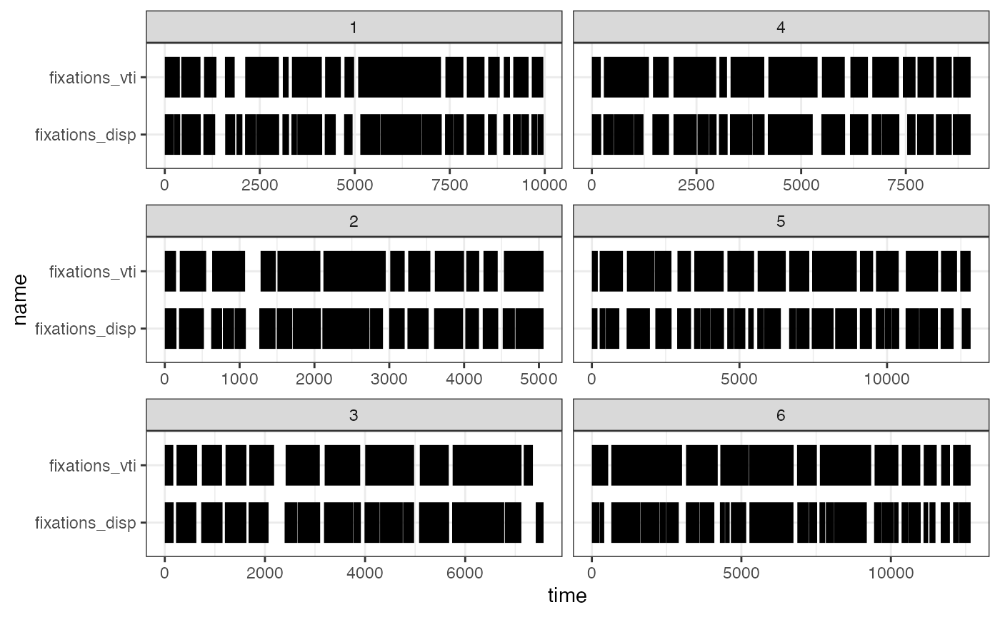
## algorithm trial percent fix_n corr.r corr.p corr.t
## 1 vti 1 87.59843 17 0.7104866 0.000000e+00 55.72199
## 2 dispersion 1 83.13648 26 0.7104866 0.000000e+00 55.72199
## 3 vti 2 85.72368 12 0.7447970 5.618304e-269 43.48691
## 4 dispersion 2 86.90789 17 0.7447970 5.618304e-269 43.48691
## 5 vti 3 87.36240 12 0.5472060 1.402887e-177 31.14180
## 6 dispersion 3 82.51871 15 0.5472060 1.402887e-177 31.14180
## 7 vti 4 85.93520 14 0.4678127 9.038015e-148 27.57461
## 8 dispersion 4 87.48159 22 0.4678127 9.038015e-148 27.57461
## 9 vti 5 86.78265 15 0.6139684 0.000000e+00 48.25708
## 10 dispersion 5 84.15996 28 0.6139684 0.000000e+00 48.25708
## 11 vti 6 82.71962 10 0.5304694 5.191333e-275 38.57517
## 12 dispersion 6 86.58601 28 0.5304694 5.191333e-275 38.57517Areas of Interest
Once we have collected our fixation data (we will proceed using the
fixations_disp dataset), we can start looking at Areas of
Interest (AOIs) and then plots of the fixations.
For the AOI_ “family” of functions, we need to specify
where our AOIs were presented on the screen. This will enable us to
determine when a participant enters or exits these areas. The best way
to do this is using the create_AOI_df() function,
populating the AOI object with coordinates relevant to the AOIs and a
set of names:
# define areas of interest
a1 <- c(460, 840, 400, 300) # Left cue
a2 <- c(1460, 840, 400, 300) # Right cue
a3 <- c(960, 270, 300, 500) # outcomes
AOI_areas <- create_AOI_df(num_AOIs = 3,
AOI_data = list(a1, a2, a3),
AOI_names = c("left", "right", "centre"))
AOI_areas## name x y width_radius height
## 1 left 460 840 400 300
## 2 right 1460 840 400 300
## 3 centre 960 270 300 500AOI_time() analyses the total time on defined AOI
regions across trials. Works with fixation and raw data as the input
(must use one or the other, not both). This gives a cumulative total
time spent for each trial.
data_AOI_time <- AOI_time(data = data_fixations_disp,
data_type = "fix",
AOIs = AOI_areas)
head(data_AOI_time, 10)## pID trial AOI time
## 1 118 1 left 1500
## 2 118 2 left 1076
## 3 118 3 left 733
## 4 118 4 left 3466
## 5 118 5 left 1090
## 6 118 6 left 879
## 7 118 1 right 3305
## 8 118 2 right 1327
## 9 118 3 right 569
## 10 118 4 right 2442The returned data show the time in milliseconds on each area of
interest, per trial. It is also possible to specify names for the
different areas of interest. Or you can request that the function
returns the time spent in AOIs as a proportion of overall time in the
trial, which requires an input vector that has the values, luckily this
is something contained in the HCL_behavioural obect.
AOI_time(data = data_fixations_disp,
data_type = "fix",
AOIs = AOI_areas,
as_prop = TRUE,
trial_time = HCL_behavioural$RT) #vector of trial times## pID trial AOI time
## 1 118 1 left 0.11139993
## 2 118 1 right 0.24545117
## 3 118 1 centre 0.39762347
## 4 118 2 left 0.13802481
## 5 118 2 right 0.17022205
## 6 118 2 centre 0.48167580
## 7 118 3 left 0.13917369
## 8 118 3 right 0.10803524
## 9 118 3 centre 0.53979646
## 10 118 4 left 0.34970891
## 11 118 4 right 0.24639041
## 12 118 4 centre 0.23720879
## 13 118 5 left 0.24637223
## 14 118 5 right 0.05560327
## 15 118 5 centre 0.48053885
## 16 118 6 left 0.16825543
## 17 118 6 right 0.14987941
## 18 118 6 centre 0.47184258
## 19 119 1 left 0.15884263
## 20 119 1 right 0.33982876
## 21 119 1 centre 0.23678772
## 22 119 2 left 0.16408962
## 23 119 2 right 0.19781477
## 24 119 2 centre 0.39602398
## 25 119 3 left 0.23310485
## 26 119 3 right 0.27946168
## 27 119 3 centre 0.28831042
## 28 119 4 left 0.20998796
## 29 119 4 right 0.44538214
## 30 119 4 centre 0.15199549
## 31 119 5 left 0.25132399
## 32 119 5 right 0.35280374
## 33 119 5 centre 0.22149533
## 34 119 6 left 0.22017987
## 35 119 6 right 0.25268223
## 36 119 6 centre 0.35973493As mentioned, it also works with raw data too:
AOI_time(data = data, data_type = "raw", AOIs = AOI_areas)## pID trial AOI time
## 1 118 1 left 1670
## 2 118 2 left 1353
## 3 118 3 left 797
## 4 118 4 left 3733
## 5 118 5 left 1150
## 6 118 6 left 923
## 7 118 1 right 3680
## 8 118 2 right 1413
## 9 118 3 right 593
## 10 118 4 right 2530
## 11 118 5 right 343
## 12 118 6 right 817
## 13 118 1 centre 6017
## 14 118 2 centre 4163
## 15 118 3 centre 3063
## 16 118 4 centre 2880
## 17 118 5 centre 2357
## 18 118 6 centre 2743
## 19 119 1 left 1760
## 20 119 2 left 943
## 21 119 3 left 1990
## 22 119 4 left 2100
## 23 119 5 left 3670
## 24 119 6 left 3047
## 25 119 1 right 3733
## 26 119 2 right 1047
## 27 119 3 right 2307
## 28 119 4 right 4313
## 29 119 5 right 4917
## 30 119 6 right 3443
## 31 119 1 centre 2650
## 32 119 2 centre 2183
## 33 119 3 centre 2523
## 34 119 4 centre 1533
## 35 119 5 centre 3130
## 36 119 6 centre 5033When working with raw data, you can also take advantage of
AOI_time_binned(), which enables data binning based on
time, and calculating time spent in AOIs as a result. Using
bin_length, you specify a desired length of bin (say 100ms)
and splits data into these bins, with ant remaining data being dropped
from the analysis (as it does not form a complete bin which could skew
analyses). As with AOI_time() you can specify either
absolute or proportional time spent.
binned_time <- AOI_time_binned(data = data_119,
AOIs = AOI_areas,
bin_length = 100,
max_time = 2000,
as_prop = TRUE)
head(binned_time)## pID trial bin_n left right centre
## 1 119 1 1 0 0 0.00
## 2 119 1 2 0 0 0.00
## 3 119 1 3 0 0 0.00
## 4 119 1 4 0 0 0.00
## 5 119 1 5 0 0 0.77
## 6 119 1 6 0 0 1.00The AOI_seq() function analyses the sequence of entries
into defined AOI regions across trials. This works with fixation
data.
## pID trial AOI start end duration entry_n
## 1 118 1 centre 400 660 260 1
## 2 118 1 right 803 1040 237 2
## 3 118 1 centre 1390 2116 726 3
## 4 118 1 left 2263 2666 403 4
## 5 118 1 centre 2760 3649 889 5
## 6 118 1 left 3743 4203 460 6The returned data provide a list of the entries into the AOIs, across each trial. By default the data is returned in long format, with one row per entry.
Plotting Functions
Finally, eyetools contains plot_* functions,
plot_seq() plot_spatial(), and
plot_AOI_growth(). These functions are not designed to
accommodate multi-participant data and work best with single trials.
plot_seq() is a tool for visualising the timecourse of
raw data over a single trial. If data from multiple trials are present,
then a single trial will be sampled at random. Alternatively, the
trial_number can be specified. Data can be plotted across
the whole trial, or can be split into bins to present distinct plots for
each time window.
The most simple use is to just pass it raw data:
plot_seq(data, pID_values = 119, trial_values = 1)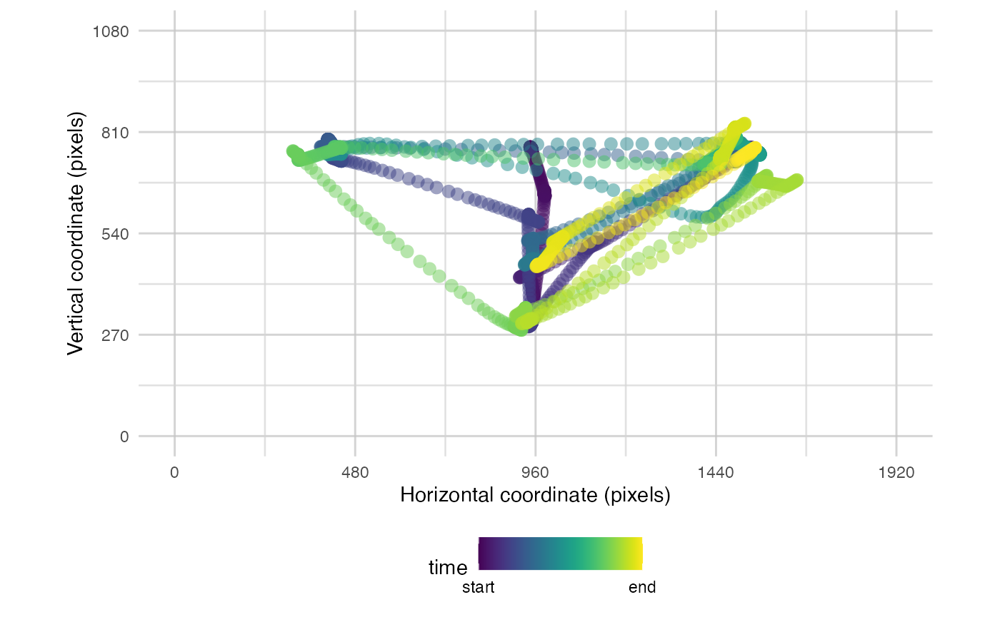
But the parameters of plot_seq() can help exploration be
more informative. We can also add a background image and/or the AOIs we
have defined:
plot_seq(data, pID_values = 119, trial_values = 1, bg_image = "data/HCL_sample_image.png") # add background image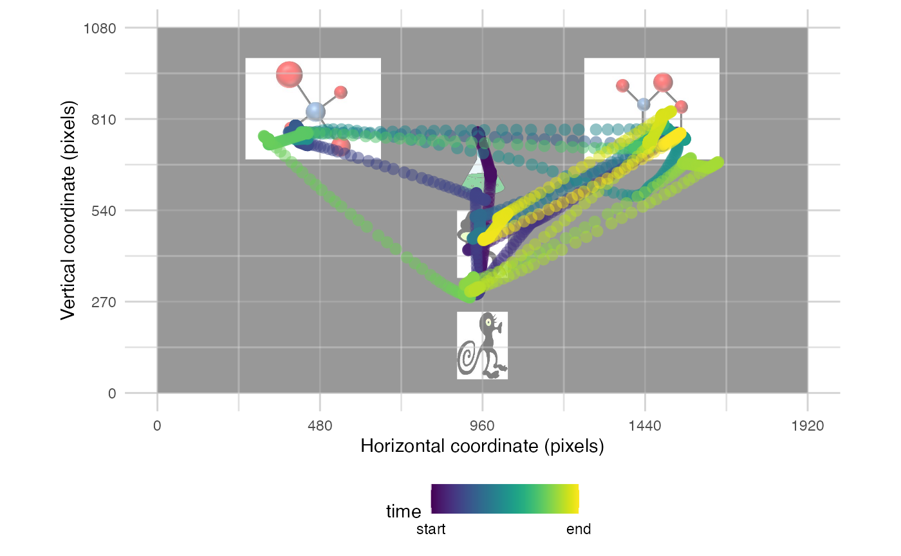
plot_seq(data, pID_values = 119, trial_values = 1, AOIs = AOI_areas) # add AOIs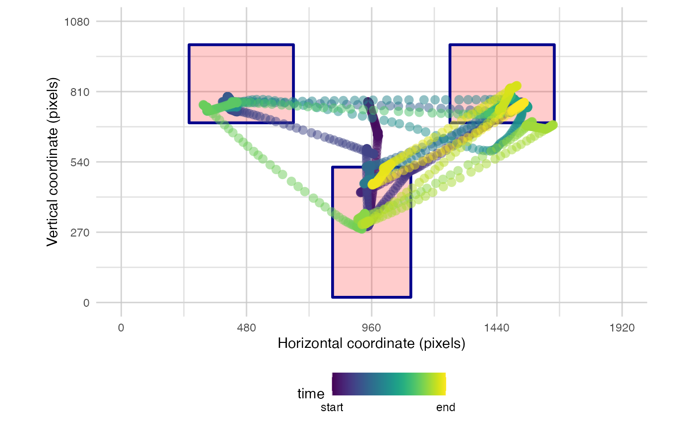
You also have the option to split the time into bins to reduce the amount of data plotted
plot_seq(data, pID_values = 119, trial_values = 1, AOIs = AOI_areas, bin_time = 1000)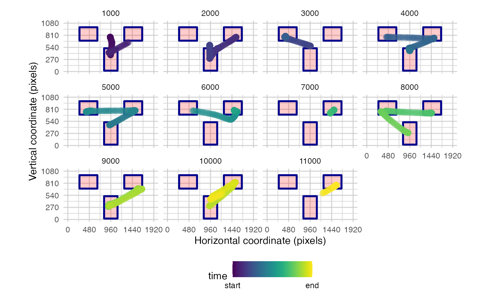
plot_spatial() is a tool for visualising raw eye-data,
processed fixations, and saccades. Fixations can be labeled in the order
they were made. You can also overlay areas of interest (AOIs) and
customise the resolution. It takes separate parameters for fixations,
raw data, and saccades so they can be plotted simultaneously. You can
also specify the trial_number to plot.
plot_spatial(raw_data = data, pID_values = 119, trial_values = 6)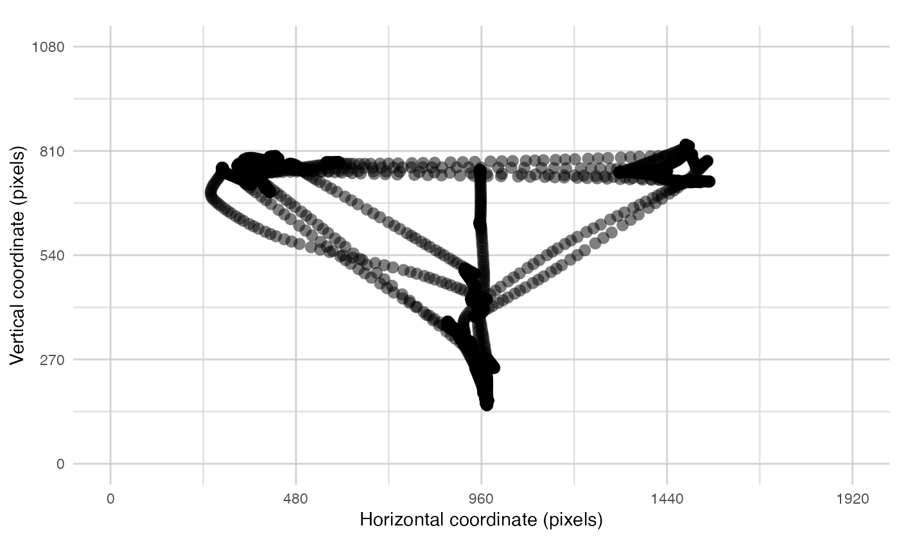
plot_spatial(fix_data = fixation_dispersion(data), pID_values = 119, trial_values = 6)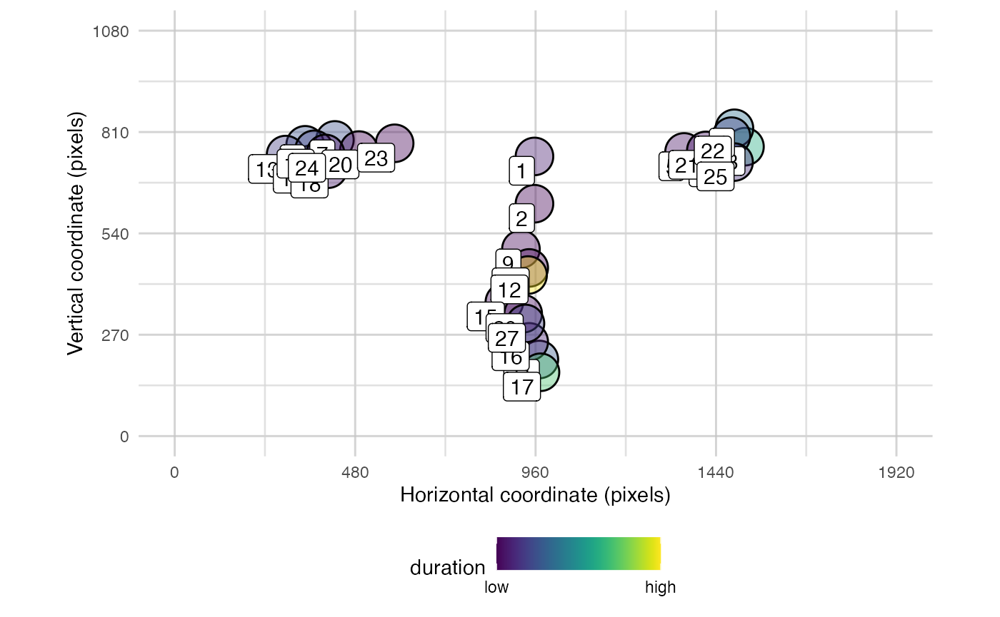
plot_spatial(sac_data = saccade_VTI(data), pID_values = 119, trial_values = 6)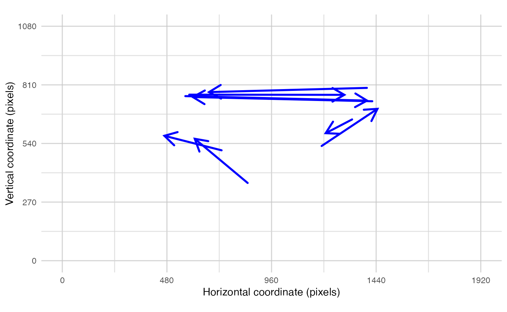
Or as mentioned, simultaneously:
plot_spatial(raw_data = data_119,
fix_data = fixation_dispersion(data_119),
sac_data = saccade_VTI(data_119),
pID_values = 119,
trial_values = 6)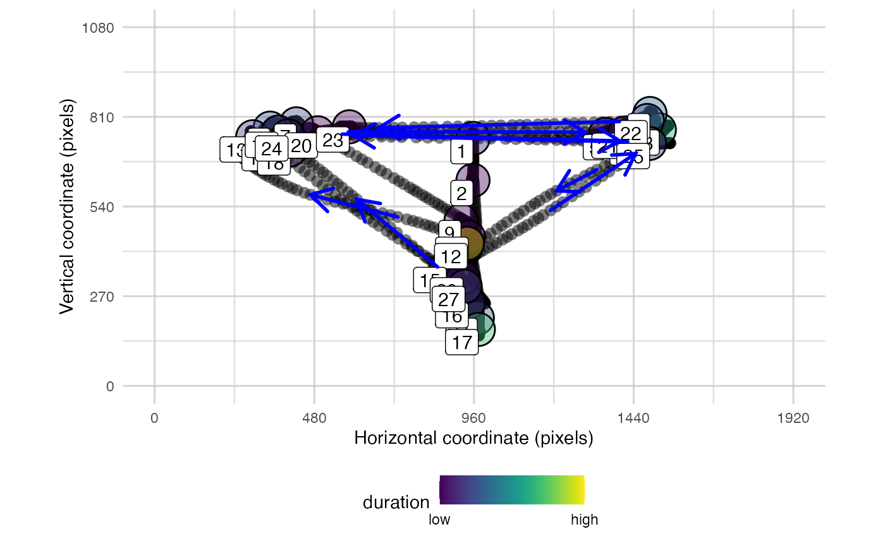
The function plot_AOI_growth() helps visualise how
attention is directed across the development of a trial. It presents a
line graph of the change in proportion of time spent in each AOI region
across the trial time.
#standard plot with absolute time
plot_AOI_growth(data = data,
pID_values = 119,
trial_values = 1,
AOIs = AOI_areas,
type = "abs")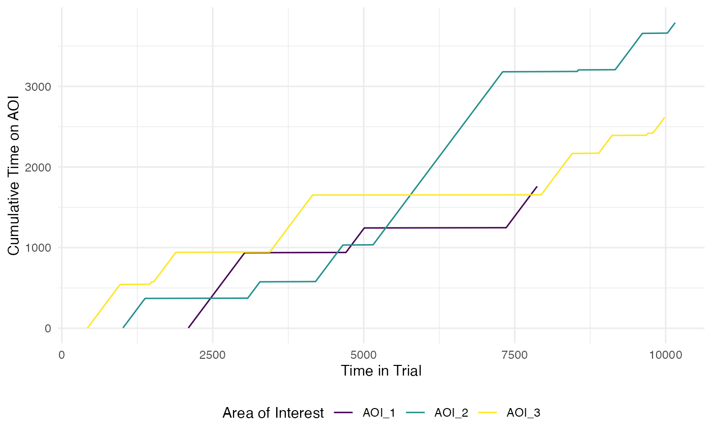
#standard plot with proportional time
plot_AOI_growth(data = data,
pID_values = 119,
trial_values = 1,
AOIs = AOI_areas,
type = "prop")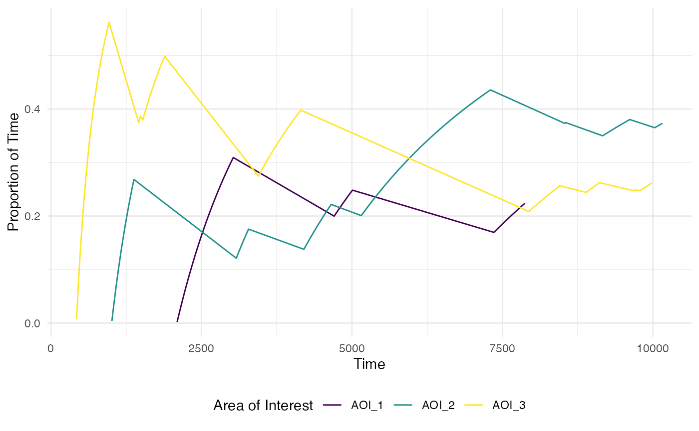